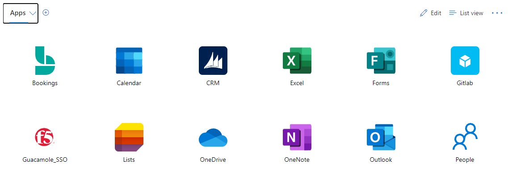
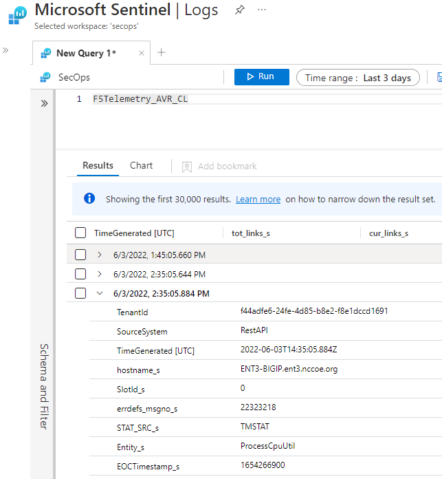
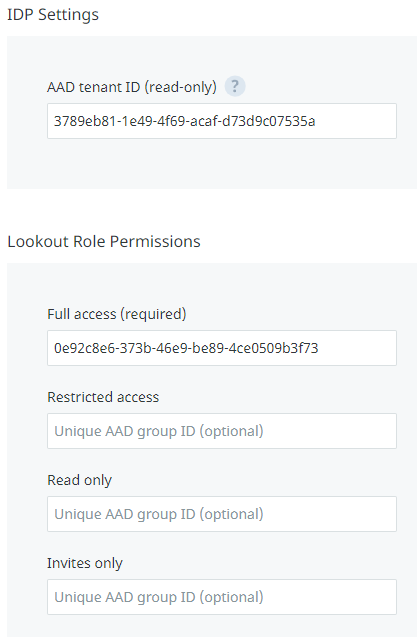
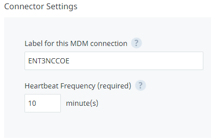
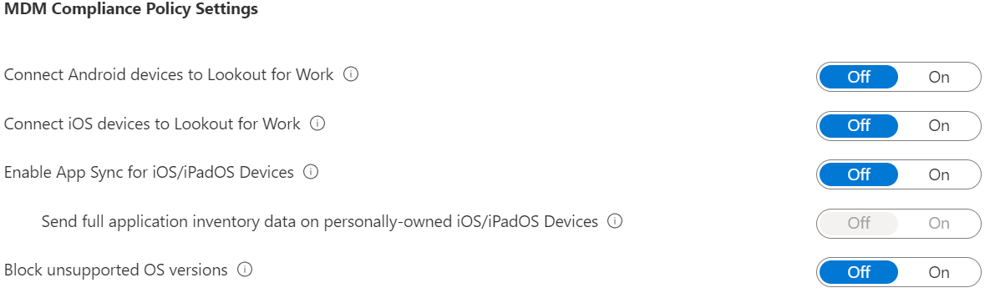
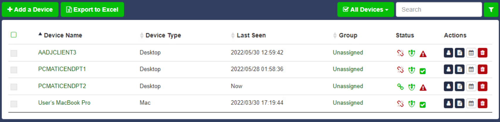

Enterprise 3 Build 1 (E3B1) - EIG Crawl - Azure AD Conditional Access (later renamed Entra Conditional Access) as PE Product Guides#
Note
This page is supplementary material for the NIST SP 1800-35 publication.
This section of the practice guide contains detailed instructions for installing, configuring, and integrating all of the products used to implement E3B1. For additional details on E3B1’s logical and physical architectures, please refer to Enterprise 3 Build 1 (E3B1).
Microsoft Azure Active Directory (AD)#
Azure AD is a SaaS identity and access management platform. No installation steps are required. You will need to create your organization’s instance of Azure AD and configure it to allow your users access to applications that use it for authentication and authorization.
After logging in to portal.azure.com, create an Azure AD Tenant.
Create a connection between your on-premises AD and Azure AD to replicate user, group, and authentication information from your AD to Azure AD.
Configure the Azure AD Tenant to enable Single Sign-On Password Reset (SSPR). This gives users the ability to reset their passwords from https://aka.ms/sspr or from within their profile in Azure AD. This will be effective for both their AD and Azure AD accounts.
Configure password writeback, which enables password changes in Azure AD to be replicated back to the on-premises AD.
The conditional access feature in Azure AD specifies conditions under which a user would be given access to a resource or application that uses Azure AD for authentication. MFA was configured as a requirement for access to all applications. Configure MFA for all users.
Access to resources based on device compliance was implemented as an essential feature in this solution. Access would only be granted to a user if the client device is compliant. Compliance is reported to Azure AD by Microsoft Endpoint Manager. Enable this feature, Conditional Access Device Compliance.
Configure an enterprise application, GitLab, to use Azure AD for authentication:
GitLab was configured to directly authenticate to Azure AD using the SAML protocol. GitLab must first be registered in Azure AD before Azure AD can be configured as the application’s IdP.
Configure Azure AD as a SAML IdP for the GitLab application. Once that is implemented, access attempts to the target application will be redirected to Azure AD for authentication and authorization.
Microsoft Endpoint Manager#
Microsoft Endpoint Manager is a cloud-based service that focuses on mobile device management (MDM) and mobile application management (MAM).
Configuration and Integration#
Add and verify a custom domain#
To connect an organization’s domain name with Intune, a DNS registration needs to be configured. This gives users a familiar domain when connecting to Intune and using resources. Use the information found at the hyperlink to create a custom domain.
Add users#
Use the information at the hyperlink to add users to Intune.
Enroll devices in Microsoft Intune#
Enrolling devices allows them to receive configuration profiles and compliance policies. Configuration profiles configure features and settings on devices. Compliance policies help devices meet an organization’s rules.
Get an Apple MDM push certificate and add it to Endpoint Manager. This certificate is required to enroll iOS/iPadOS devices. Then enroll iOS devices in Microsoft Intune.
Create an iOS enrollment profile. An enrollment profile defines the settings applied to a group of devices during enrollment.
Enroll Android devices in Microsoft Intune. To enable Android Enterprise, an administrative Google account needs to be connected to the Intune tenant.
Create an iOS compliance policy in Microsoft Intune. It will be evaluated before access is allowed from iOS devices.
Create an Android compliance policy in Microsoft Intune. It will be evaluated before access is allowed from Android devices.
Create an iOS/macOS configuration profile for iOS or Mac devices.
Configure conditional access rules#
Conditional access is used to control the devices and apps that can connect to company resources. Use the information in the hyperlink to create device-based conditional access policies.
Manage applications#
iOS/iPadOS: Use the instructions at Add iOS Store Apps to select apps from the iOS/iPadOS store that will be approved for installation on your managed iOS or iPadOS devices.
Android: For this build we added Managed Google Play apps. Managed Google Play is Google’s enterprise app store which serves as a source of applications for Android Enterprise in Intune. Use the instructions at Add Android Store Apps to select apps that will be approved for installation and made available to your managed devices.
Windows: Use the information provided at select approved apps to choose which apps should be added to your Windows devices.
There is more than one way to configure Windows apps in Intune. We configured the app using App suite information. For other ways, refer to the Microsoft documentation.
Microsoft Defender for Endpoint#
Microsoft Defender for Endpoint provides endpoint protection, detection, and response to threats.
Configuration and Integration#
Enable Microsoft Defender for Endpoint#
Use the information at Configure Microsoft Defender for Endpoint in Microsoft Intune | Microsoft Learn to enable Defender for Endpoint.
Use the information in the provided hyperlink to onboard devices. Once devices are onboarded, threat signals and vulnerability information are automatically collected from them.
You can optionally enable supervised mode on iOS devices using information at the hyperlink. Supervised mode gives administrators greater control over corporate-owned devices.
Alerts and security incidents can be viewed and responded to by accessing the Defender for Endpoint cloud component. Use the information in the hyperlink to view and respond to discovered threats.
Create Endpoint Detection and Response policy (Windows 10 and later)#
Endpoint detection and response (EDR) policies are used to detect advanced attacks in near real-time. Use the information in the hyperlink to create an EDR policy.
Create an antivirus policy#
An antivirus policy defines the behavior of the antivirus software agent on the endpoint. Use the information in the hyperlinks to create an antivirus policy and configure antivirus policy settings.
Create Defender compliance policy#
Compliance policies can help protect organizational data by requiring users and devices to meet defined security requirements. Use the information in the hyperlink to create a Defender for Endpoint compliance policy.
Microsoft Defender Antivirus#
Microsoft Defender Antivirus is leveraged by Microsoft Defender by Endpoint. It is anti-malware software built into Windows client devices that detects threats and malware on client devices and quarantines infected files. Defender Antivirus is enabled by default.
Check the status of real-time protection to ensure it’s on.
Microsoft Sentinel#
Microsoft Sentinel is a cloud-native SIEM and SOAR system. It can be used for security analytics, threat intelligence, attack detection, and threat response.
There is no need to install Sentinel, as it is a managed service. Instead, it needs to be enabled and configured in your Azure environment. It also needs a workspace to store and correlate ingested data.
Use the general instructions found at Connector to Data Sources to enable log forwarding to Sentinel from various devices, systems, and services. Each data source will have to be connected independently from other data sources, so you must perform this step once per data source. In this build, Azure AD, Endpoint Manager, Defender for Endpoint, Microsoft 365, and Tenable.io were configured to send logs using this method.
The Log Analytics Agent is a log forwarder that accepts syslog and Common Event Format (CEF) formatted logs and then forwards the logs to Sentinel. If you have a product or device without a native Sentinel integration, install and configure the Log Analytics Agent on a virtual machine. Once completed, the log forwarder will be able to receive syslog data on UDP port 514. Then configure the product or device that will be the data source to send logs via syslog to the log forwarder using the product’s instructions.
Microsoft 365#
Microsoft 365 is a suite of SaaS-based productivity applications used for a variety of activities such as word processing, accounting, creating presentations, email, and others. Microsoft 365 was enabled in the environment and was used as a set of protected target applications. Use the information at Activate Microsoft 365 to activate your Microsoft 365 subscription.
Use the Microsoft 365 Sign-in link to log on to Microsoft 365. Use your email address and password. You will be required to authenticate using multi-factor authentication.
Once authentication is complete, you will see the various Microsoft 365 applications, such as Word, Excel, PowerPoint, and Outlook in your dashboard.
F5 BIG-IP#
BIG-IP is both a load balancer and an identity-aware proxy. In this phase of the build, it was primarily used as an identity-aware reverse proxy that forwarded or denied traffic to protected back-end applications.
Installation, Configuration, and Integration#
BIG-IP was deployed into the environment using a virtual machine image or open virtual appliance (OVA) file. Once this OVA import operation is complete, log into the virtual machine console and assign an IP address to a network interface, then continue configuration by connecting to its web interface. This BIG-IP image has both the Access Policy Manager (APM) and the Local Traffic Manager modules installed.
Deploy BIG-IP OVA into your VMware environment.
Access the BIG-IP web interface by entering the IP address or DNS name into a web browser. Then complete the initial setup and configuration of BIG-IP.
Create virtual servers which map to back-end protected applications—in this build, to our Guacamole application server.
Configure BIG-IP to use Azure AD as the SAML IdP for external authentication to access back-end applications. The instructions at Configure BIG-IP Easy Button for Header Based SSO and the video at Azure AD and BIG-IP APM Integration Video provide additional references.
Once these instructions are completed, BIG-IP, leveraging Azure AD for external authentication, will only allow successfully authenticated and authorized users to access Guacamole. Access to the backend application is either done by connecting directly via the DNS name of the application or by going to myapps.microsoft.com and selecting the backend application icon, such as F5 Guacamole_SSO as shown below.

For this build, configure BIG-IP to send logs to Microsoft Sentinel. Then you can observe BIG-IP logs in Sentinel, as shown below.

Lookout Mobile Endpoint Security (MES)#
Lookout Mobile Endpoint Security (MES) solution is used to control mobile device access to corporate resources based on risk assessment. Risk is assessed based on information collected from devices by the Lookout service. Lookout then communicates this risk level to the MDM (Microsoft Endpoint Manager (Intune)) which determines whether the device is compliant or not.
Configuration and Integration#
Before configuring Lookout, collect the following information from Azure AD: Azure AD tenant ID and Azure AD group object ID.
Go to Azure Active Directory > Properties and locate Tenant ID. Copy and save it to the text file.
Go to Azure Active Directory > Groups to open the Groups | All groups pane.
Select the group with full access rights (Lookout Admin group).
Copy the (group) Object Id, and then save it in a text file.
The following steps are to be completed in the Lookout Enterprise admin console and will enable a connection to Lookout’s service for Intune enrolled devices.
Sign in to the Lookout for Work console and go to System > Integrations, and then select Choose a product to set up. Select Microsoft Azure. Copy and paste the Azure AD (AAD) tenant ID and group object ID from the text file that was created in previous steps.

- Stay in System > Integrations, and then select Choose a product to set up. Select MicrosoftIntune.
Configure Intune connector settings.

After Lookout MES is enabled, a connection to Lookout in Intune needs to be set up.
Go back to Microsoft Endpoint Manager and enable the Mobile Threat Defense connector there.
Select Tenant administration > Connectors and tokens > Mobile Threat Defense.
On the Mobile Threat Defense pane, select Add.
For Mobile Threat Defense connector to setup, select Lookout MTD solution from the drop-down list.
Configure the toggle options according to the organization’s requirements. This screenshot shows examples.

When Lookout is integrated with Intune MTD and the connection to Intune is enabled, Intune creates a classic conditional access policy in Azure AD. To view classic conditional access policy, go to Azure Active Directory > Conditional Access > Classic policies. Classic conditional access policy is used by Intune MTD to require that devices are registered in Azure AD so that they have a device ID before communicating to Lookout MTD. The ID is required so that devices can report their status to Intune.
Create MTD Device Compliance Policy with Intune#
Compliance policy is needed to detect threats and assess risks on mobile devices to determine if a device is compliant or not.
Open the Microsoft Endpoint Manager admin center.
Select Endpoint security > Device Compliance > Create Policy.
Select the Platform, and then Create.
On Basics, provide Name and Description. Select Next to continue.
On Compliance settings, expand and configure Device Health. Choose the Mobile Threat Level from the drop-down list for Require the device to be at or under the Device Threat Level. Choose the level for compliance.
Select Next to go to Assignments. Select the groups or users to which this policy should be assigned.
PC Matic Pro#
PC Matic Pro is an endpoint protection system that consists of a server for centralized management and agents installed on endpoints. In addition to scanning for malware, it uses a default-deny approach for preventing malicious and unauthorized programs and processes from executing. To configure PC Matic Pro, you will need to install the server, install the agents, and configure a list of allowed software.
PC Matic Pro Server needs to be installed on a server with Windows 2019 Server and SQL Server preinstalled.
Obtain the OnPremInstallerRun.ps1 installation script from the vendor and open an elevated PowerShell window.
Execute the OnPremInstallerRun.ps1 script by entering .\OnPremInstallerRun.ps1 registryUser pcmatic -registryPwd <insert_password_here> -localDBUser pcm-app to install docker, pull down the container images, and deploy the container instances that make up the PC Matic Pro server.
Navigate to the PC Matic web server and verify that it is operational by opening a web browser and going to https://<pcmaticDNSName>/web_portal. In this build, the DNS name is nist.pcmaticfederal.com; as such, to access the server’s web interface, we would go to https://nist.pcmaticfederal.com/web_portal.
Follow these steps to install PC Matic Endpoint Agents:
Open a web browser on a Windows or macOS client device. Navigate to the PC Matic Server web interface by browsing to https://nist.pcmaticfederal.com from the client device and log on with your credentials.
Click Add a Device and then click Windows Installer or Mac Installer, as appropriate, to download the PC Matic Endpoint Agent.
Install the agent.
Once installed, the agent will establish communications with the server and show up on the list of managed devices once you log on to the server as previously described.
Devices with an agent will register and come online.

Tenable.io#
For installation, configuration, and integration instructions, refer to Tenable.io.
Integration with Microsoft Sentinel#
In Tenable.io, click the hamburger menu (☰) in the top left corner and navigate to Settings > Access Control > Users.
(Optional) Click Create User and create a new API user for Microsoft Sentinel. In this implementation, a standard administrator account was used.
Click the user who needs API keys generated. Then click API KEYS > Generate > Continue. Save the Access and Secret Keys, as they will not be shown again.
In Microsoft Sentinel, navigate to Data Connectors. Search tenable and click Tenable.io Vulnerability Management (Preview) > Open Connector Page.
Scroll down in the Instructions panel and save the Workspace ID and Primary Key.
Click Deploy to Azure.
Select the appropriate resource group.
In the Workspace ID and Workspace Key fields, enter the values obtained in step 5.
In the Tenable Access Key and Tenable Secret Key fields, enter the values obtained in step 3.
Click Review + create.
Click Create. Function deployment will begin. Once deployment is complete, it will take some time before Sentinel begins making calls to Tenable.io.
Tenable.ad#
For installation, configuration, and integration instructions, refer to Tenable.ad.
Tenable NNM#
For installation, configuration, and integration instructions, refer to Tenable NNM.
Mandiant Security Validation (MSV)#
For installation, configuration, and integration instructions, refer to Mandiant Security Validation (MSV).
Forescout eyeSight#
Forescout eyeSight provides asset discovery with both active and passive techniques, and through integrations with network and security infrastructure. In this build, Forescout was deployed on-premises in two virtual hosts: an Enterprise Manager and Forescout Appliance.
For Forescout installation instructions, visit the Forescout Installation Overview.
Integration with AD#
In AD, create a domain administrator service account for Forescout and save the credentials.
In the Forescout console, navigate to Tools > Options > HPS Inspection Engine.
In the Domain Credentials section, click the Add button.
Enter the domain information and credentials you saved earlier. Click OK.
Click Apply. After the new configuration is saved, click Test to verify that the credentials are working as expected.
Integration with Cisco Switch#
For Cisco Switch integration instructions, visit the Switch Plugin Configuration Guide.
Integration with Cisco Wireless Controller#
For Cisco Wireless Controller integration instructions, visit the Wireless Plugin Configuration Guide.
Integration with Microsoft Sentinel#
In the Forescout console, navigate to Tools > Options > CEF.
Click Add.
In the Add Server dialog, enter a Name, select Use UDP for Connection, and enter the IP address of the Sentinel Log Forwarder. Click Next.
Click the Assign CounterACT Devices radio button, and check all of the checkboxes next to the listed devices.
Click Finish. Verify that logs are being received by the Sentinel Log Forwarder.
Integration with Palo Alto Networks NGFW#
For Palo Alto Networks NGFW integration instructions, visit the eyeExtend for Palo Alto Networks Next-Generation Firewall Configuration Guide.
Integration with Tenable.io#
For Tenable.io integration instructions, visit the eyeExtend for Tenable.io Vulnerability Management Configuration Guide.
Palo Alto Networks Next Generation Firewall#
For installation, configuration, and integration instructions, refer to Palo Alto Networks Next Generation Firewall.
DigiCert CertCentral#
For installation, configuration, and integration instructions, refer to DigiCert CertCentral.